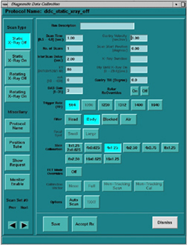
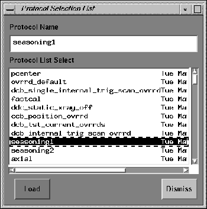
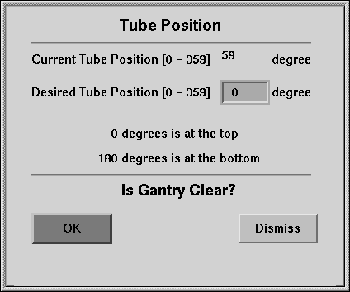
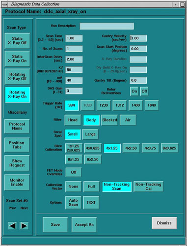

Proprietary to General Electric
Direction 5193891-800, Rev# 5
LightSpeed 5.X Pro16 Limited Access Service Information (Adv)
Proprietary to General Electric |
Diagnostic Data Collection is a tool that allows the user to scan and create scan files using user selectable scan types and parameters as an aid in troubleshooting and verifying the data integrity of the DAS/Detector subsystem.
HOW TO ACCESS DDC - ADVANCED SERVICE
Select [DIAGNOSTICS] .
Select [DATA ACQUISITION] .
Select [DIAGNOSTIC DATA COLLECTION] .
Use DDC to collect DAS data with and without x-Ray and/or rotation.
Use the Scan Analysis tool to examine collected data.
The Diagnostic Data Collection (DDC) tool supports the following scan types:
Static X-Ray Off.
Static X-Ray On.
Rotating X-Ray Off.
Rotating X-Ray On.
Each scan type is presented as a selectable button on the left-hand side of the DDC screen. Each scan type has an associated set of scan parameters that the user may select.
There are additional scan parameters displayed on the screen that the user will not be allowed to modify, presented as insensitive for the following reasons:
The parameters are not required for the scan type selected.
The parameters will not be functional until a future release.
The following table shows what scan parameters are available in each of the four scan types:
Table 1: Scan Parameters vs. Scan Types
| SCAN PARAMETER | STATIC X-RAY-ON | STATIC X-RAY OFF | ROTATING X-RAY-ON | ROTATING X-RAY-OFF |
|---|---|---|---|---|
| Run Description | X | X | X | X |
| Scan Time | X | X | X | X |
| No. of Scans | X | X | X | X |
| Inter Scan Delay | X | X | X | X |
| Trigger Rate | X | X | X | X |
| Calibration Vector | X | X | X | X |
| Rotor | X | X | ||
| kv | X | X | ||
| mA | X | X | ||
| DAS Gain | X | X | ||
| Gantry Velocity | X | X | ||
| Xray On Position | X | |||
| Initial Start Position | X | |||
| Modulation | ||||
| Phase | ||||
| X-ray Duration | ||||
| Dly Until Xray On | ||||
| Focal Spot | X | X | ||
| Filter | X | X | ||
| Slice Collimation | X | X |
For each of the scan types selected, the user may specify the following options, which are presented in the DDC GUI as buttons close to the bottom of the screen (see Illustration 1):
Auto Scan
TXXT
For each of the scan types selected the user may specify the auto scan option.
TXXT (Trigger On, X-ray On, X-ray Off, Trigger Off) is an option for the Static X-Ray On and the Rotating X-Ray On scan type selections. This button becomes insensitive when the Static X-Ray Off or Rotating X-Ray Off scan type is selected.
The TXXT button is associated with the following scan parameters:
X-ray Duration
Dly Until X-ray On
The Diagnostic Data Collection Interface (see Illustration 1) consists of three main areas:
Command Area
Work Area
Status Message Area
Illustration 1: DDC Interface (example is of Static X-Ray-Off)

The Command Area consists of a vertical palette of push buttons located on the left hand side of the screen. These include the four scan type selection buttons and two miscellaneous buttons; the Protocol Name and the Position Tube buttons.
The four scan type buttons, described previously in Section 1, are provided to select the scan type indicated by the button label. When the user selects a scan type, the corresponding user-modifiable scan parameters become sensitive, and the parameters that the user may not modify become insensitive.
When this button is selected, the Protocol Selection List pop-up window (see Illustration 2) will appear. This list contains all the available protocols on the system. When the user selects a protocol for loading, the values of the scan parameters (that were stored in the protocol file) display in the appropriate areas of the screen.
Illustration 2: DDC Protocol List

Diagnostic Data Collection (DDC) Protocols are located in the following directory on the OC:
/usr/g/protocol/service/v1.1
Most of these protocols are used by tools and diagnostic scans. Depending on troubleshooting experience, these protocols can be selected from within DDC, and accepted “as is” or some of the parameters can changed for the current exam. Changes to the protocols cannot be changed and saved as well as new service protocols cannot be created.
Table 2: Diagnostic Data Collection (DDC) Protocols
| PROTOCOL NAME | PROTOCOL USED FOR |
|---|---|
| prot.1set.scanr | For Engineering Use Only |
| prot.4sets.scanr | For Engineering Use Only |
| prot.TestDriver.scanr | For Engineering Use Only |
| prot.air_100.scanr | 100KV Air Calibration Scans |
| prot.air_120.scanr | 120KV Air Calibration Scans |
| prot.air_140.scanr | 140KV Air Calibration Scans |
| prot.air_80.scanr | 80KV Air Calibration Scans |
| prot.air_xtalk.scanr | Not Used |
| prot.aircal.scanr | Air Calibration |
| prot.axial.scanr | “Template” of simple Axial |
| prot.axial2.scanr | For Engineering Use Only |
| prot.bleedersetup.scanr | HV Bleeder set-up scans |
| prot.cal0.scanr | Z-Slope Cal Scans |
| prot.cal1.scanr | Z-Slope Cal Scans |
| prot.cal2.scanr | Z-Slope Cal Scans |
| prot.cal3.scanr | Z-Slope Cal Scans |
| prot.cal4.scanr | Z-Slope Cal Scans |
| prot.cal5.scanr | Z-Slope Cal Scans |
| prot.cal6.scanr | Z-Slope Cal Scans |
| prot.cal7.scanr | Z-Slope Cal Scans |
| prot.ccb_offset_ovrrd.scanr | For Engineering Use Only |
| prot.ccb_position_ovrrd.scanr | For Engineering Use Only |
| prot.ccb_test_all_ovrrds.scanr | For Engineering Use Only |
| prot.ccb_time_sweep_ovrrd.scanr | For Engineering Use Only |
| prot.ccb_trig_sweep_ovrrd.scanr | For Engineering Use Only |
| prot.ccb_tst_current_ovrrds.scanr | For Engineering Use Only |
| prot.cine.scanr | “Template” of simple Cine scan |
| prot.clever_gain_aircal.scanr | Clever Gain scans used during FastCal |
| prot.cold_warmup.scanr | Cold Tube warm-up during Calibration |
| prot.das_aux_channels.scanr | KV / mA Auxilary Channel Reporting in DASTools |
| prot.das_aux_channels2.scanr | KV / mA Auxilary Channel Reporting in DASTools |
| prot.das_aux_channels3.scanr | KV / mA Auxilary Channel Reporting in DASTools |
| prot.das_aux_channels4.scanr | KV / mA Auxilary Channel Reporting in DASTools |
| prot.das_dccal_absolute.scanr | Used for DCCAL Scanning in DASTools |
| prot.das_dccal_absolute10.scanr | Used for DCCAL Scanning in DASTools |
| prot.das_dccal_absolute11.scanr | Used for DCCAL Scanning in DASTools |
| prot.das_dccal_absolute12.scanr | Used for DCCAL Scanning in DASTools |
| prot.das_dccal_absolute13.scanr | Used for DCCAL Scanning in DASTools |
| prot.das_dccal_absolute14.scanr | Used for DCCAL Scanning in DASTools |
| prot.das_dccal_absolute15.scanr | Used for DCCAL Scanning in DASTools |
| prot.das_dccal_absolute2.scanr | Used for DCCAL Scanning in DASTools |
| prot.das_dccal_absolute3.scanr | Used for DCCAL Scanning in DASTools |
| prot.das_dccal_absolute4.scanr | Used for DCCAL Scanning in DASTools |
| prot.das_dccal_absolute5.scanr | Used for DCCAL Scanning in DASTools |
| prot.das_dccal_absolute6.scanr | Used for DCCAL Scanning in DASTools |
| prot.das_dccal_absolute7.scanr | Used for DCCAL Scanning in DASTools |
| prot.das_dccal_absolute8.scanr | Used for DCCAL Scanning in DASTools |
| prot.das_dccal_absolute9.scanr | Used for DCCAL Scanning in DASTools |
| prot.das_dcnoise.scanr | Used for DC Noise Scan in DASTools |
| prot.das_dcnoise_offsets.scanr | Used for DC Offset/Noise Scan in DASTools |
| prot.das_dcoffsets.scanr | Used for DC Offset Scan in DASTools |
| prot.das_drift.scanr | Used for Offset Drift Scan in DASTools |
| prot.das_interconnect.scanr | Used for Interconnect Test in DASTools |
| prot.das_interconnect10.scanr | Used for Interconnect Test in DASTools |
| prot.das_interconnect11.scanr | Used for Interconnect Test in DASTools |
| prot.das_interconnect2.scanr | Used for Interconnect Test in DASTools |
| prot.das_interconnect3.scanr | Used for Interconnect Test in DASTools |
| prot.das_interconnect4.scanr | Used for Interconnect Test in DASTools |
| prot.das_interconnect5.scanr | Used for Interconnect Test in DASTools |
| prot.das_interconnect6.scanr | Used for Interconnect Test in DASTools |
| prot.das_interconnect7.scanr | Used for Interconnect Test in DASTools |
| prot.das_interconnect8.scanr | Used for Interconnect Test in DASTools |
| prot.das_interconnect9.scanr | Used for Interconnect Test in DASTools |
| prot.das_popmicro.scanr | Used for Pop/Noise Scans in DASTools |
| prot.dcb_canned_cnv_pattern_ovrrd.scanr | Scan Data Path Diagnostic Scans |
| prot.dcb_canned_dcb_pattern_ovrrd.scanr | Scan Data Path Diagnostic Scans |
| prot.dcb_cnv_autocorr_disable_ovrrd.scanr | Eng. Use only, disables Converter Bd. Auto-correction |
| prot.dcb_detector_ctrl_ovrrd.scanr | Eng. Use Only, Controls FET over-ride settings |
| prot.dcb_internal_trig_scan_ovrrd.scanr | Currently not used, Internal Trigger over-rides |
| prot.dcb_single_internal_trig_scan_ovrrd.scanr | Currently not used, Single Trigger over-ride |
| prot.dcb_test_all_ovrrds.scanr | For Engineering Use Only |
| prot.dcb_tst_current_ovrrds.scanr | Converter Bd. Test voltage injection over-ride |
| prot.dcb_view_auto_zero_chan_ovrrd.scanr | Converter Bd. Auto-zero channel over-ride |
| prot.ddc_axial_xray_off.scanr | Default DDC Axial x-ray off |
| prot.ddc_axial_xray_on.scanr | Default DDC Axial x-ray on |
| prot.ddc_scout_xray_off.scanr | Default DDC Scout x-ray off |
| prot.ddc_scout_xray_on.scanr | Default DDC Scout x-ray on |
| prot.ddc_static_xray_off.scanr | Default DDC Stationary x-ray off |
| prot.ddc_static_xray_on.scanr | Default DDC Stationary x-ray on |
| prot.ductwarm.scanr | Ductility warm-up scans used in Auto mA scans |
| prot.fpa_check.scanr | FPA Test Scans used during FastCal |
| prot.grndleakage.scanr | Ground Leakage scans during HV integration |
| prot.helical.scanr | "Template" for simple Helical scan |
| prot.hhs_large_spot.scanr | HHS Scans |
| prot.hhs_large_sweep.scanr | Collimator Aperture Test |
| prot.hhs_small_spot.scanr | HHS Scans |
| prot.hhs_small_sweep.scanr | Collimator Aperture Test |
| prot.hot_iso.scanr | Hot ISO Data Scans |
| prot.hss.scanr | Heat Soak & Seasoning Scans |
| prot.hssquick.scanr | Heat Soak & Seasoning Quick Scans |
| prot.kvtest.scanr | Not Used |
| prot.large_cal.scanr | Phantom Calibration |
| prot.medium_cal.scanr | Phantom Calibration |
| prot.nbt_aircal.scanr | Non-Bowtie Air Calibration |
| prot.ovrrd_default.scanr | Not Used |
| prot.p12_xtalk.scanr | Not Used |
| prot.p35_100.scanr | Engineering IQTB Phantom Calibration |
| prot.p35_120.scanr | Engineering IQTB Phantom Calibration |
| prot.p35_140.scanr | Engineering IQTB Phantom Calibration |
| prot.p35_80.scanr | Engineering IQTB Phantom Calibration |
| prot.p48_100.scanr | Engineering IQTB Phantom Calibration |
| prot.p48_120.scanr | Engineering IQTB Phantom Calibration |
| prot.p48_140.scanr | Engineering IQTB Phantom Calibration |
| prot.p48_80.scanr | Engineering IQTB Phantom Calibration |
| prot.pcenter.scanr | Phantom Centering |
| prot.prescanma.scanr | Auto mA Calibration |
| prot.risefall.scanr | HV Integration Rise / Fall Scans |
| prot.rx_test_all_ovrrds.scanr | Not Used |
| prot.sanity_1.scanr | Internal S/W sanity testing scans |
| prot.sanity_2.scanr | Internal S/W sanity testing scans |
| prot.sanity_3.scanr | Internal S/W sanity testing scans |
| prot.sanity_4.scanr | Internal S/W sanity testing scans |
| prot.sanity_5.scanr | Internal S/W sanity testing scans |
| prot.sanity_6.scanr | Internal S/W sanity testing scans |
| prot.sanity_7.scanr | Internal S/W sanity testing scans |
| prot.scandp.scanr | Scan Datapath Diagnostic |
| prot.scantimer.scanr | Scan Timer scan |
| prot.scout.scanr | "Template" for simple Scout scan |
| prot.seasoning1.scanr | Heat Soak & Seasoning scans |
| prot.seasoning2.scanr | Heat Soak & Seasoning scans |
| prot.small_cal.scanr | Small Phantom Cal |
| prot.static.scanr | "Template" for simple static scan |
| prot.sweep.scanr | For Engineering Use Only |
| prot.ta_bow.scanr | Beam On Window (BOW) Alignment Scan |
| prot.ta_cbf.scanr | Center Bowtie Filter (CBF) Alignment scan |
| prot.ta_iso.scanr | ISO (cold) Alignment Air scan |
| prot.ta_iso_lrg.scanr | ISO (Large Spot) Alignment scan |
| prot.ta_iso_sml.scanr | ISO (Small Spot) Alignment scan |
| prot.ta_por.scanr | Plane of Rotation (POR) Alignment scan |
| prot.ta_snr.scanr | Not Used |
| prot.tst_all_current_ovrrds.scanr | For Engineering Use Only |
| prot.tst_all_ovrrds.scanr | For Engineering Use Only |
| prot.w20_100.scanr | Engineering IQTB Phantom Calibration |
| prot.w20_120.scanr | Engineering IQTB Phantom Calibration |
| prot.w20_140.scanr | Engineering IQTB Phantom Calibration |
| prot.w20_80.scanr | Engineering IQTB Phantom Calibration |
| prot.warmup1.scanr | Tube warm-up 1 scans during calibration |
| prot.warmup2.scanr | Tube warm-up 2 scans during calibration |
| prot.water_cal.scanr | Auto CT Number scans |
| prot.water_numbers_kv100.scanr | Manual CT Number Scans (100KV) |
| prot.water_numbers_kv120.scanr | Manual CT Number Scans (120KV) |
| prot.water_numbers_kv140.scanr | Manual CT Number Scans (140KV) |
| prot.water_numbers_kv80.scanr | Manual CT Number Scans (80KV) |
| prot.xrayverif_4x125.scanr | Used for X-Ray verification scans in DAS Integration |
| prot.xrayverif_cal2.scanr | Used for X-Ray verification scans in DAS Integration |
| prot.xrayverif_cal4.scanr | Used for X-Ray verification scans in DAS Integration |
| prot.xrayverif_cal6.scanr | Used for X-Ray verification scans in DAS Integration |
| prot.zscal.scanr | Not Used |
When this button is selected, the Tube Position pop-up window (see Illustration 3) appears. The tube positioning function allows the user to position the tube between 0 and 360 degrees of the rotation.
Illustration 3: Position Tube Pop-Up Window

All scan parameters in the fields to the right of the Command Area that may be modified, depending on the scan type and protocol selected, are displayed in the Work Area. Each scan parameter value is presented in a text field or indicated by a toggle button in a depressed state. When a value is displayed and is sensitive in a text field, a new value can be entered directly to replace the old value.
Status messages display in this area at the very bottom of the GUI screen. The messages displayed in this area are not persistent and will disappear after a few seconds.
Use ReconRx screens to list/select the DDC-acquired data. Use ReconRx to reconstruct the DDC-acquired data into images.
DDC scans appear in Recon Rx List/Select when they consist of:
Rotating X-Ray On scans
Full rotation scans consisting of 984 views
Scans that have a corresponding cal file
Illustration 4: Diagnostic Data Collection Screen

To produce an image without tracking:
Using DDC, create a non-tracking air cal. Use KV, mA, Filter, Focal Spot, and Aperture to duplicate patient scanning.
Nothing should be in the beam.
Select Calibration Vector Option Non-Tracking Cal. This creates a temporary file that the air cal portion of data reconstruction uses.
Scan.
Place the phantom that you want scanned and reconstructed center in the beam.
Select the exact same parameters that was used for the temporary Aircal, except for Calibration Vector option, select Non-Tracking Scan.
Scan and record the exam number.
Retro-Recon this exam number using Application ReCon menu options. Be sure to adjust the Field Of View (FOV) that matches the phantom size of FOV that your interested in viewing.
View the images view the browser.